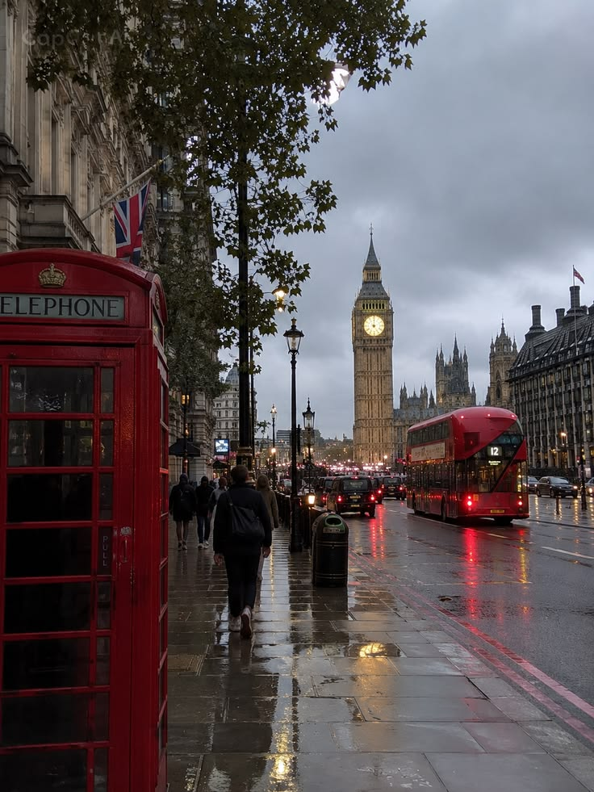
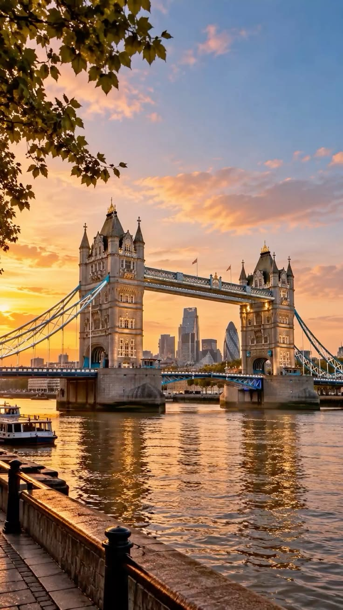

I’ve actually been to London before but it was so long ago I want to experience it all again. I remember when I first went I fell in love with the city and seeing how people lived their lives there. I love that London is an English speaking country but still offers so many differences compared to the United States.
Why you should go!
London is the perfect destination for travelers who want to experience a combination of history, culture, and modern city life. As one of the world's most recognizable cities, London is home to famous landmarks such as Big Ben, Buckingham Palace, the London Eye, and Tower Bridge. Visitors can explore historic castles and museums, enjoy traditional afternoon tea, shop along Oxford Street, or experience the city's incredible theater and entertainment scene. London's diverse neighborhoods offer a variety of restaurants, markets, and cultural experiences that reflect people from all over the world. With its unique blend of historic charm and modern attractions, London offers an unforgettable experience for every traveler.